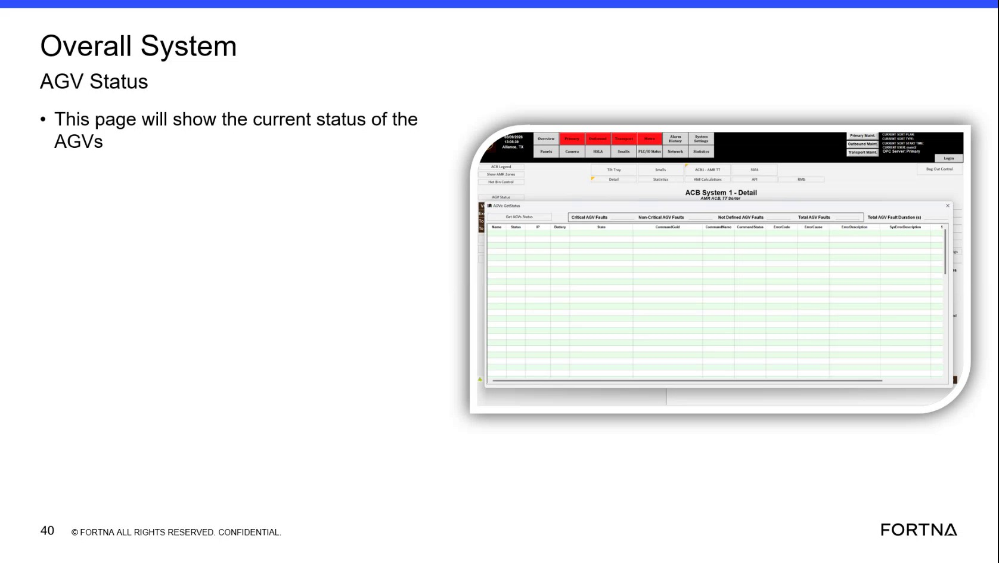

| Procedure ID | proc_check_auv_agv_overall_fleet_status_overall_system_agv_status_popup_v1 |
|---|---|
| Title | Check AUV/AGV overall fleet status using the “Overall System AGV Status” pop-up |
| Procedure Type | diagnostic |
| Primary Role | L1_support |
| Support Safe | Yes |
| Capability Tags | fleet_system_status |
| Access Surface | rms_ui |
| Audience Roles | L1_support |
| Failure Pattern Tags | site_stoppage |
| Validation Status | needs_sme_review |
| Merge Status | source_finalized |
Use the RMS / fleet status UI pop-up titled “Overall System AGV Status” to confirm the current overall AGV/AUV system status is populated and capture the displayed overall status wording/values for troubleshooting context.
When you need a first confirmation of whether the overall AGV/AUV system status page is populated and what overall status it reports (e.g., to establish whether the system appears reachable vs overall-down/unreachable).

Responsible role: L1_support
Instruction:
In the RMS / fleet status UI (rms_ui), open the pop-up/page titled “Overall System AGV Status”.
Expected result:
The “Overall System AGV Status” pop-up/page is opened and visible.
Responsible role: L1_support
Instruction:
On the “Overall System AGV Status” page, confirm the page shows current status details (i.e., the status content is present rather than blank/unreachable).
Expected result:
The “Overall System AGV Status” page shows current overall AGV/AUV status details (not blank/unavailable).
Stop or Escalate If:
Responsible role: L1_support
Instruction:
Record the displayed overall status value(s) shown on the “Overall System AGV Status” page using the exact on-screen wording/fields present.
Expected result:
You have captured the displayed overall status value(s)/wording from the “Overall System AGV Status” pop-up.